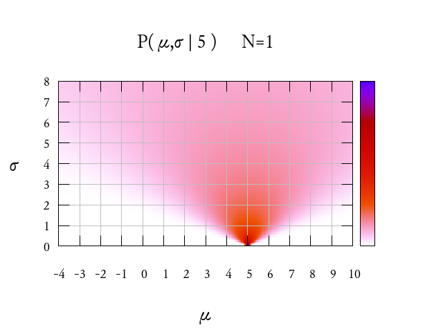
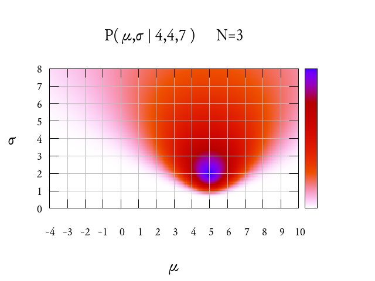

Consider the following sentence
The probability that tossing the coin $X$ you get heads is $51\%$
What does it mean, exactly?
This is an important and difficult question. There is not a scientific consensus about the meaning of this sentence. There are two, very different, answers: the so-called frequentist and bayesian interpretations of probability.
The frequentist interpretation is that this sentence gives a precise information about the coin $X$. It says that the coin is somewhat biased towards heads and against tails, and that if you repeat this experiment a huge amount of times, it is very likely that you'll get more heads than tails. Precisely, the ratio of heads to tails will converge towards $51/49$ as the number of tosses tends to infinity.
The bayesian interpretation is that this sentence gives a precise information about you, not about the coin $X$. It says that your current state of knowledge leads you to believe that it is more likely that on the next toss, you will get heads rather than tails. More precisely, that if you were to place a bet on that coin toss, you would bet $51$ against $49$ that the result is heads.
The frequentist interpretation is a statement about the physical world, thus it can be either true or false. If it is true, then the sentence that the probability of heads is $52\%$ must be false because they are incompatible. Also the sentence that the probability of heads is $51.00000000001\%$, must be false. However, notice that it would be very, very difficult to check which one of these sentences is true and which one is false, just by doing experiments. Consider that instead of tossing a coin you toss an omelette, and that it gets destroyed after the first toss. Can this sentence still have a meaning? Will you be able to ever check whether it is true or false? I find the frequentist interpretation very difficult to understand. Please, somebody explain it to me more clearly. I cannot honestly write about it without my text looking like a straw man argument.
The bayesian interpretation is a statement about your personal beliefs, so it does not really make sense to say that it is true or false. Notice, in particular, that the bayesian interpretation does not talk about the physical world itself, only about your knowledge of this world. The physical world itself is deterministic. The coin will land head or tails according to its initial position and speed, following the deterministic laws of nature. It is only because you do not know with enough precision the position, speed, and all the necessary physical details that you cannot be sure whether it will land head or tails.
What can you do, then, with a sentence about your personal beliefs? Can you do science with it? Yes, you can. The only thing that you can do is run experiments and update your beliefs, after looking at the results of the experiments. This is what bayesian inference is all about: you have some prior beliefs and you update them using the basic laws of probability theory.
The definition of conditional probability is $$ P(A|B)=\frac{P(A\cap B)}{P(B)} $$ then, by simple algebraic manipulation, and using different letters, you obtain Bayes formula: $$ P(\theta|D)=\frac{P(D|\theta)P(\theta)}{P(D)} $$
You can interpret this formula in the following way
This formula tells you how to update your prior knowledge $P(\theta)$ about the parameters $\theta$ after having observed the data $D$. For that, you need to take into account the ``data generation model'', that describes how likely is each datum for a given value of the parameters.
The only way to understand inference is doing some simple examples.
Let us start with the easiest possible inference problem.
Let us suppose that an experiment produces independent samples of a normally distributed random variable of mean $\mu$ and standard deviation $\sigma$. We have observed $N$ samples of values $x_1,\ldots,x_N$. What can we say about $\mu$ and $\sigma$?
If you have had some exposure to estimation theory, you would automatically say, we define estimators for the unknown parameters, such as $$ \hat\mu :=\frac{1}{N}\sum_{n=1}^N x_n $$
and $$ \hat\sigma_1 :=\sqrt{\frac{1}{N}\sum_{n=1}^N (x_n-\hat\mu)^2} $$
or maybe $$ \hat\sigma_2 :=\sqrt{\frac{1}{N-1}\sum_{n=1}^N (x_n-\bar\mu)^2} $$
or even, god forbid, $$ \hat\sigma_3 :=\sqrt{\frac{1}{N-1.5}\ \sum_{n=1}^N (x_n-\bar\mu)^2} $$
or, if you are really fancy, you can use an unbiased estimator for $\sigma$ $$ \hat\sigma_4 :=\frac{\Gamma\left(\frac{n-1}{2}\right)}{\Gamma\left(\frac{n}{2}\right)\sqrt{2}}\ \sqrt{\sum_{n=1}^N (x_n-\bar\mu)^2} $$
There are more unbiased estimators for $\sigma$, this one is just an example. Where do these fantastic formulas come from? From rules of thumb, you invent them, and then you prove some properties about them: such as being unbiased, or having minimal variance, and whatnot. This is some serious bullshit that you should avoid as much as possible.
Let us start again with the easiest possible inference possible: to estimate $\mu$ and $\sigma$ from independent observations $x_1,\ldots,x_N$ of a normal random variable. What can we do? We can state what we do know: (1) We know that the values $x_1,\ldots,x_N$ are independent samples of a random variable of type $\mathcal{N}(\mu,\sigma)$. (2) We do not know anything about $\mu$ (3) We do not know anything about $\sigma$
Well, if that is really the case, I have bad news: there's nothing to do in that case.
You can't do inference---or data compression---without making assumptions.
--David J. C. MacKay
And that's it. Bayesian inference does not simply allow you to infer anything from raw data. If you want to do inference, you have to begin with some prior knowledge (that may be as imprecise as you want), and then, after having observed the data, you use Bayes rule to update your knowledge according to the observations.
Since your knowledge, or lack thereof, is always modelled by probability distributions, you have to specify a prior probability distribution for your unknown parameters $\mu$ and $\sigma$. For example, you can suppose, that $|\mu|\le10^6$ and that $0\le\sigma\le10^6$. More precisely, we assume that $\mu$ and $\sigma$ are independent and that they have uniform distributions in the indicated intervals. This is then the prior density distribution of the parameters, that models our knowledge before observing any data: $$ P(\mu,\sigma)=P(\mu)\cdot P(\sigma)= \frac{1}{2\cdot10^6}\mathbf{1}_{\left[-10^6,10^6\right]}(\mu) \cdot \frac{1}{10^6}\mathbf{1}_{\left[0,10^6\right]}(\sigma) $$ This is our model for the prior: a constant function on a huge rectangle of the plane.
More interesting is the data generation model: $$ P(x_1,\ldots,x_N|\mu,\sigma)= \prod_{n=1}^N \frac{1}{\sqrt{2\pi\sigma}}e^{-\frac{(x_n-\mu)^2}{2\sigma^2}} $$ this formula is the exact translation of the sentence ``the $x_n$ are independent, identically distributed samples of $\mathcal{N}(\mu,\sigma)$''. By simple manipulation, the formula above is written as $$ P(x_1,\ldots,x_N|\mu,\sigma)= (2\pi\sigma)^{-N/2}\exp\left(-\sum_{n=1}^N\frac{(x_n-\mu)^2}{2\sigma^2}\right) $$
Now, Bayes rule says $$ P(\mu,\sigma|x_1,\ldots,x_N)\propto P(x_1,\ldots,x_N|\mu,\sigma)\cdot P(\mu,\sigma) $$
|  | |
|  | |